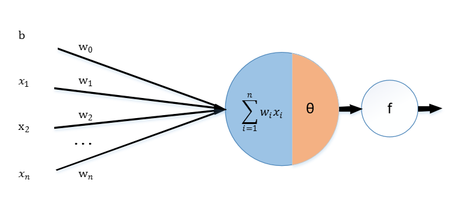

线性分类器的基本模型如下：
\[F = f(\sum\limits_{i=1}^n w_ix_i - \theta)\]其中f是硬限幅函数（也可以称作阶跃函数，阀值函数）。
\[f(x)= \begin{cases} 0& x<0\\ 1& {x \geq 0} \end{cases}\]
构造线性分类器有很多方法，在此首先介绍的是梯度下降。
\[f(x_{x+1})=f(x_k+\rho_k\triangledown^{(k)})\] \[x_{k+1}=x_k+\rho_k\triangledown^{(k)}\] \[f(x)=w^T*x+b\]将误差error看做\(\rho_k*\triangledown^{(k)}\)
\[error=target-hardlim(f)\]然后用误差修正权重系数，进行如下迭代
\[w_{k+1}=w_{k}+a*x^T*error\]python代码如下：
1
2
3
4
5
6
7
8
9
10
11
12
13
14
15
16
17
18
19
20
21
22
23
24
25
26
27
28
29
30
31
32
33
34
35
36
37
38
39
40
41
42
43
44
45
46
47
48
49
50
51
52
53
54
55
56
57
58
59
60
61
62
63
64
65
66
67
68
69
70
71
72
73
74
75
76
77
78
# -*- coding: utf-8 -*-
import os
import sys
import numpy as np
import operator
from numpy import *
import matplotlib.pyplot as plt
def file2matrix(path, delimiter):
fp = open(path, "rb") # 读取文件内容
content = fp.read()
fp.close()
rowlist = content.splitlines() # 按行转换为一维表
# 逐行遍历
# 结果按分隔符分割为行向量
recordlist = [map(eval, row.split(delimiter)) for row in rowlist if row.strip()]
return mat(recordlist) # 返回转换后的矩阵形式
# 绘制分类点
def drawScatterbyLabel(plt, Input):
m, n = shape(Input)
target = Input[:, -1]
for i in xrange(m):
if target[i] == 0:
plt.scatter(Input[i, 0], Input[i, 1], c='blue', marker='o')
else:
plt.scatter(Input[i, 0], Input[i, 1], c='red', marker='s')
# 根据数据集构造数据阵
# 第1列全1，第2/3列为输入数据
def buildMat(dataSet):
m, n = shape(dataSet)
dataMat = zeros((m, n))
dataMat[:, 0] = 1
dataMat[:, 1:] = dataSet[:, :-1]
return dataMat
# 硬限幅函数
def hardlim(dataSet):
dataSet[nonzero(dataSet.A > 0)[0]] = 1
dataSet[nonzero(dataSet.A <= 0)[0]] = 0
return dataSet
if __name__ == "__main__":
# 输入数据
Input = file2matrix("testSet.txt", "\t")
target = Input[:, -1] # 获取分类标签列表
[m, n] = shape(Input)
# 按分类绘制散点图
drawScatterbyLabel(plt, Input)
# 构建x+b 系数矩阵：b这里默认为1
dataMat = buildMat(Input)
alpha = 0.001 # 步长
steps = 500 # 迭代次数
weights = ones((n, 1))
# 主程序
# wk+1 = wk + a * x * error
for k in xrange(steps):
gradient = dataMat * mat(weights)
output = hardlim(gradient)
errors = target - output
weights = weights + alpha * dataMat.T * errors
print weights # 输出权重
X = np.linspace(-5, 5, 100)
# y=w*x+b: b:weights[0]/weights[2]; w:weights[1]/weights[2]
Y = -(double(weights[0]) + X * (double(weights[1]))) / double(weights[2])
plt.plot(X, Y)
plt.show()
参考资料： 《机器学习算法与编程实践》